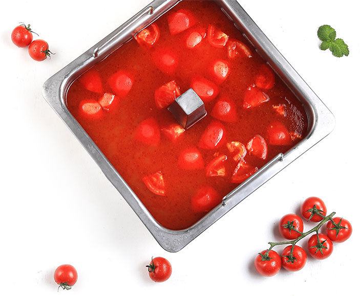
番茄锅底
番茄锅底精心选择色泽鲜红、完全自然成熟番茄品种，产于北纬42度蔬果盛产地带
主要配料：新疆天山北坡等地种植的完全自然成熟番茄新疆天山北坡等地种植、每天日照时间充裕（超过15小时日照时间）全程可追溯，创造独特口味番茄火锅原料。
通过精心调味、现代化设备和工艺精心熬制，充分激发番茄红素，色泽艳红、口味浓郁，推荐搭配河鲜类食材。另有缤纷果味番茄锅，与无味精番茄锅在国内部分地区有售卖。
< 旗下品牌 >
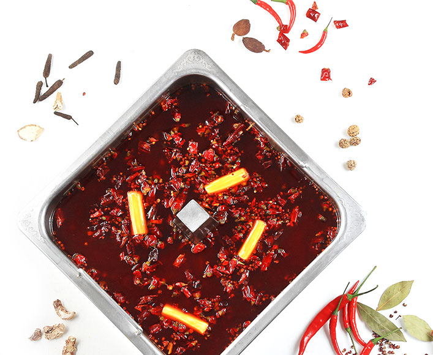
清油麻辣锅底
植物油炒制，香而不腻
主要配料：优质干辣椒，青花椒多种天然香辛料
采用非转基因优质大豆油，以现代化的工艺设备炒制而成；色泽鲜红，口味香辣浓郁；推荐涮食脆弹类动物食材，可任意配搭多种特色酱料味道更佳。
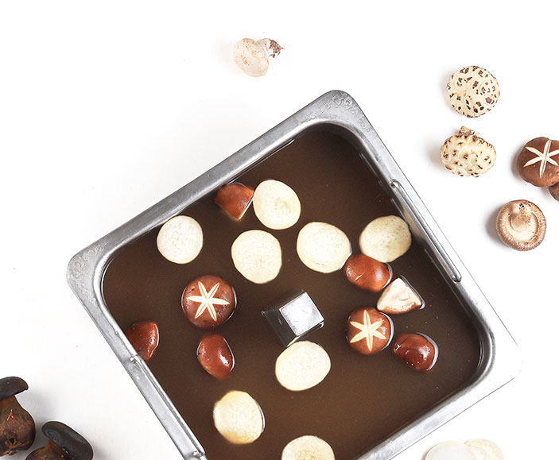
菌汤锅底
云南野生干菌，开锅喝一碗
主要配料：优选菌菇为主要原料
自古云贵地区出产多种优质野生菌子，并辅以多种调味料，精心调配出清亮汤底。菌香浓郁、爽口；搭配香辣味碟或菌香味碟口味更佳。
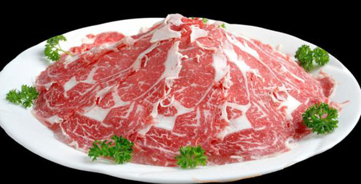
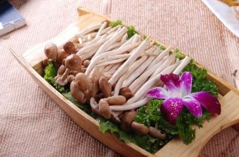
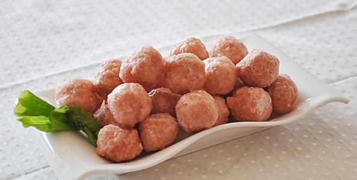
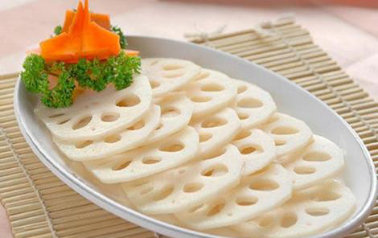
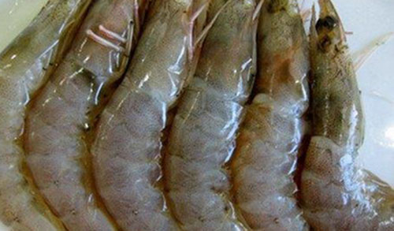
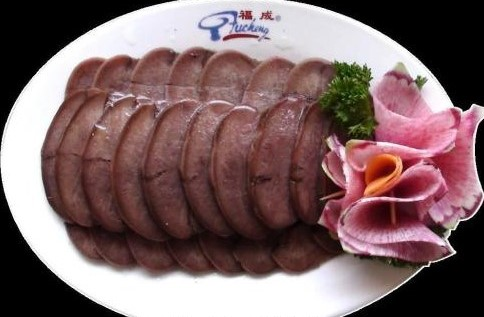
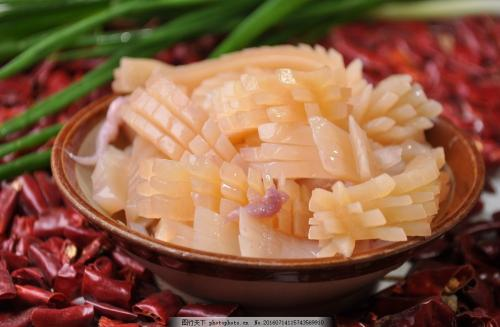
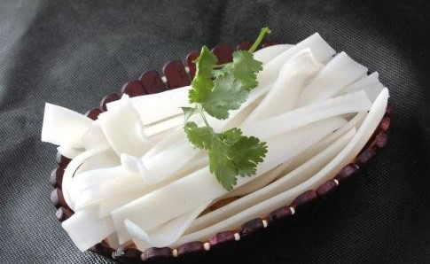
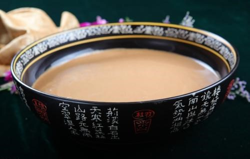
麻酱：
配料：
芝麻酱 韭菜花 葱 腐乳
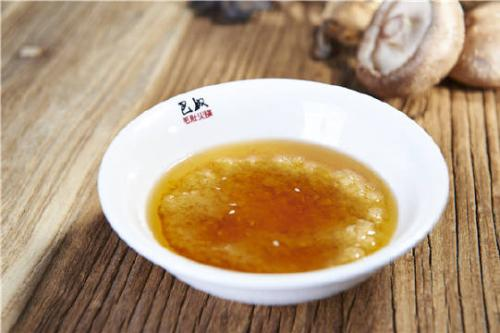
蒜泥香油：